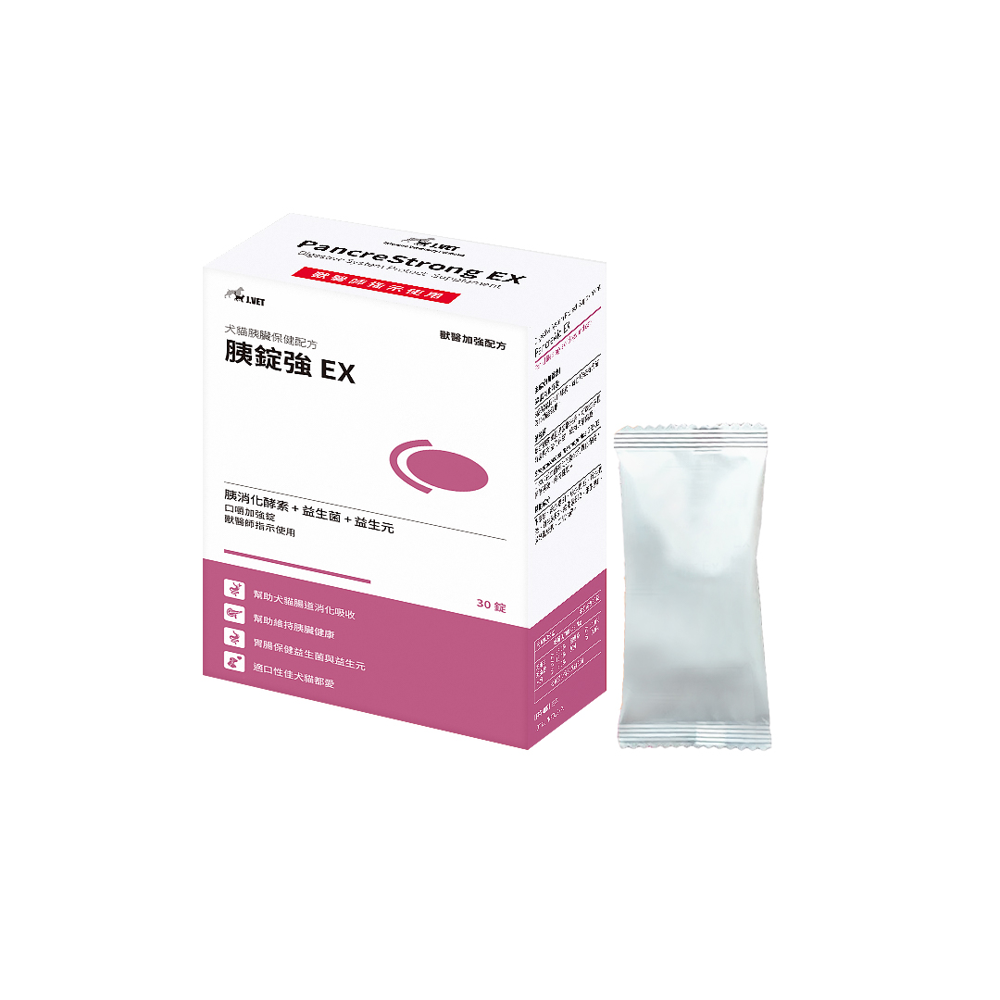

| 比較項目 | 胰錠強 EX | 傳統胰消化酵素 | 優妙化（腸溶） |
|---|---|---|---|
| 產品定位 | 全方位胰臟照護 + 抗氧化保健 | 單純外源性消化酵素補充 | 腸溶標靶高濃縮酵素 |
| 劑型規格 | 300 mg／錠 10錠×3排 | 300 mg／膠囊或散劑 | 280 mg／腸溶膠囊 |
| 酵素規格 | 6X濃縮 Protease/Amylase/Lipase ＋ 納豆菌自生酵素 | 約 0.3 g 胰酵素粉 | 約 0.75 g（最高濃縮） |
| 輔助保護成分 | ✔ Vit E、B群/B12、GRX02、牛磺酸 | ✘ 無 | ✘ 無 |
| 黏膜安全性 | ✔ 包埋技術，可直接餵食 | ⚠ 未混勻易造成口腔潰瘍出血 | ✔ 腸溶保護（顆粒胃排空不均） |
| 日常保健用量 | 5–10 kg：1–2錠／餐 | 5 kg：1膠囊／餐 | ⚠ 不建議日常保健使用 |
| EPI PERT 用量（犬） | 7–10 錠／餐 | 7–10 顆／餐 | 3–4 顆／餐 |
| EPI PERT 用量（貓） | 2–7 錠／餐 | 2–7 顆／餐 | 1–3 顆／餐 |
| 臨床定位 | 慢性胰臟炎長期護理首選 | 僅為消化酵素，EPI 確診使用 | EPI 高需求劑量選擇 |
| 比較面向 | 🐕 犬 | 🐈 貓 |
|---|---|---|
| 主要病因 | 高脂血症・飲食脂肪・肥胖 | 特發性為主；腸胃共病（三體炎） |
| 慢性期飲食 | 極低脂糧 <10–12% DM | 高消化率糧 / 水解蛋白糧 不需極端限脂；水解蛋白為選項之一 |
| 常見共病 | 高血脂、糖尿病、Cushing's | IBD + 膽管肝炎（三體炎 >60%） |
| 疼痛表現 | 明顯：弓背、祈禱姿 | 隱晦：不吃、母雞蹲、精神差 |
| 止吐首選 | Maropitant（NK-1，兼具止痛） | |
| 止痛（急性重症） | Fentanyl CRI + Ketamine / Lidocaine CRI 住院多模式止痛（Multimodal） | Buprenorphine 住院期間 |
| 止痛（慢性居家） | Gabapentin | Gabapentin（長期控制） |
| B12 缺乏風險 | 中等 | 高（貓 IF 100% 由胰臟分泌；胃壁細胞完全不分泌） |
| 早期腸道營養 | >24–48h 未進食即評估放管 | >24–48h 未進食積極放管 預防脂肪肝（Hepatic Lipidosis） |
| EPI 好發性 | 中等（GSD 等品種較高） | 低（但一旦發生 B12 更嚴重） |